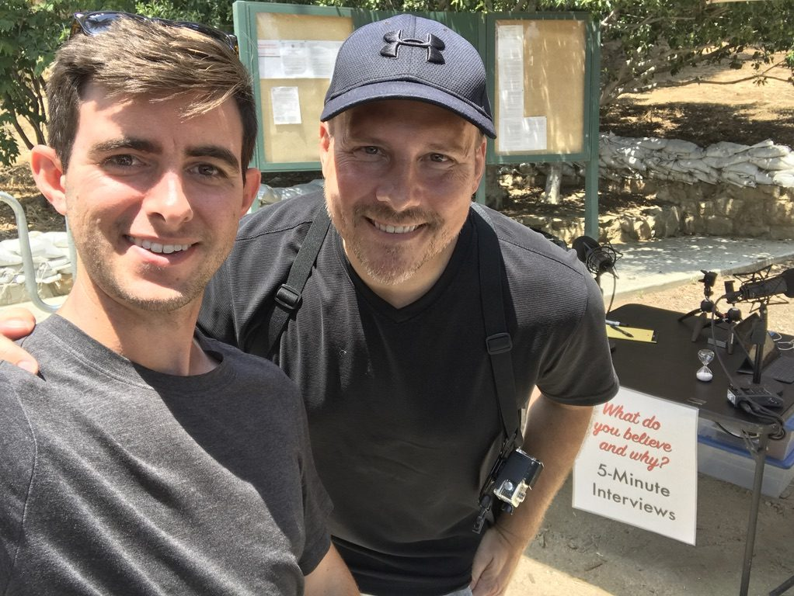
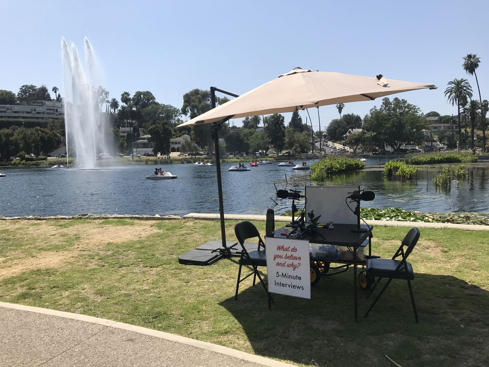
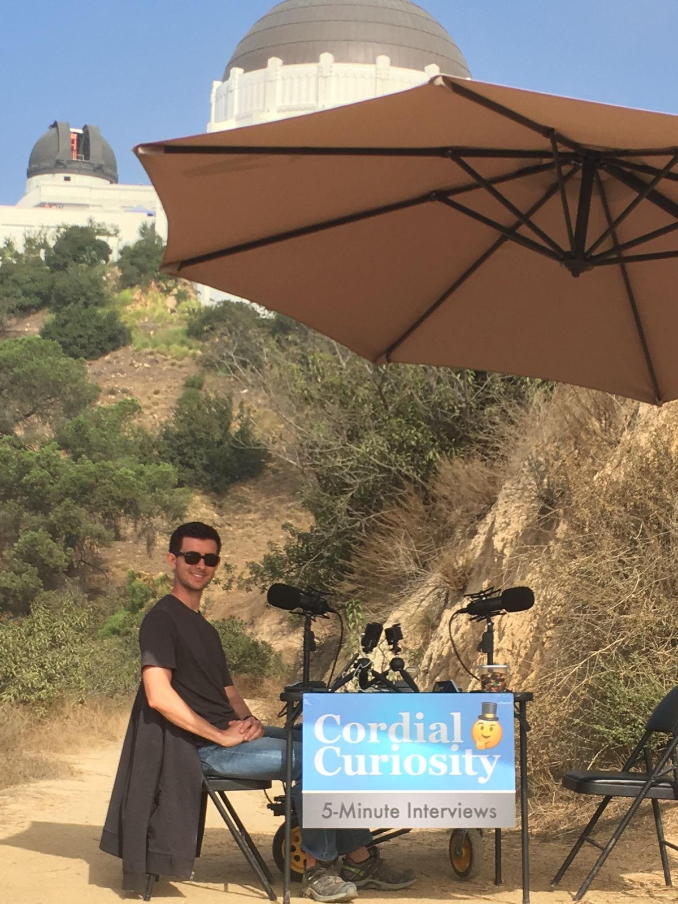
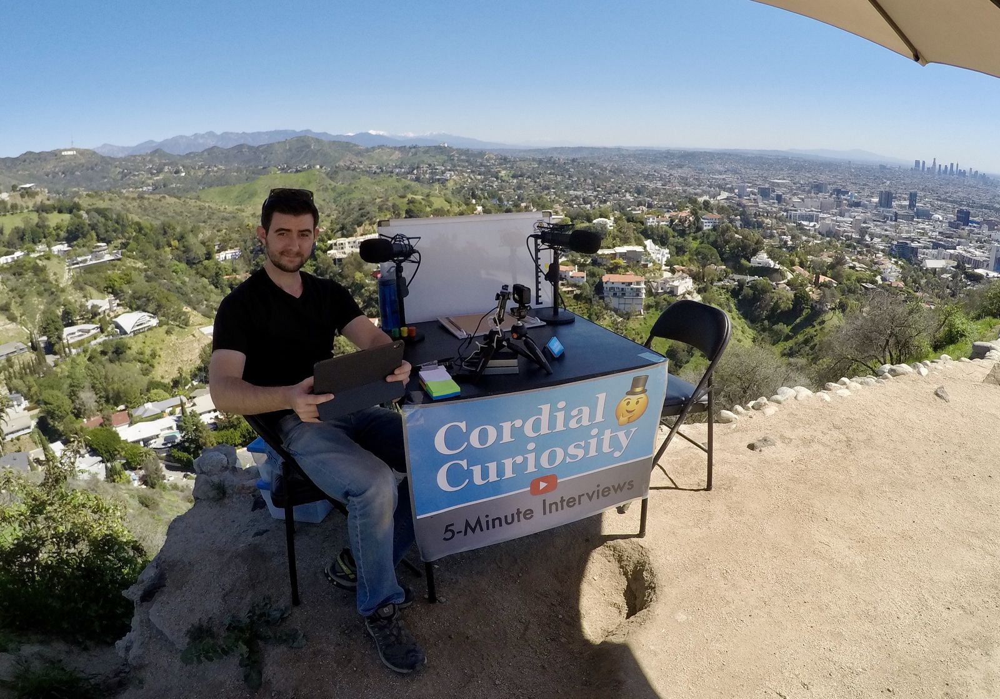
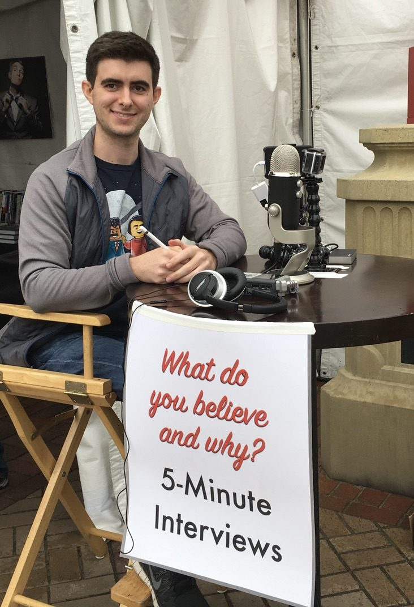
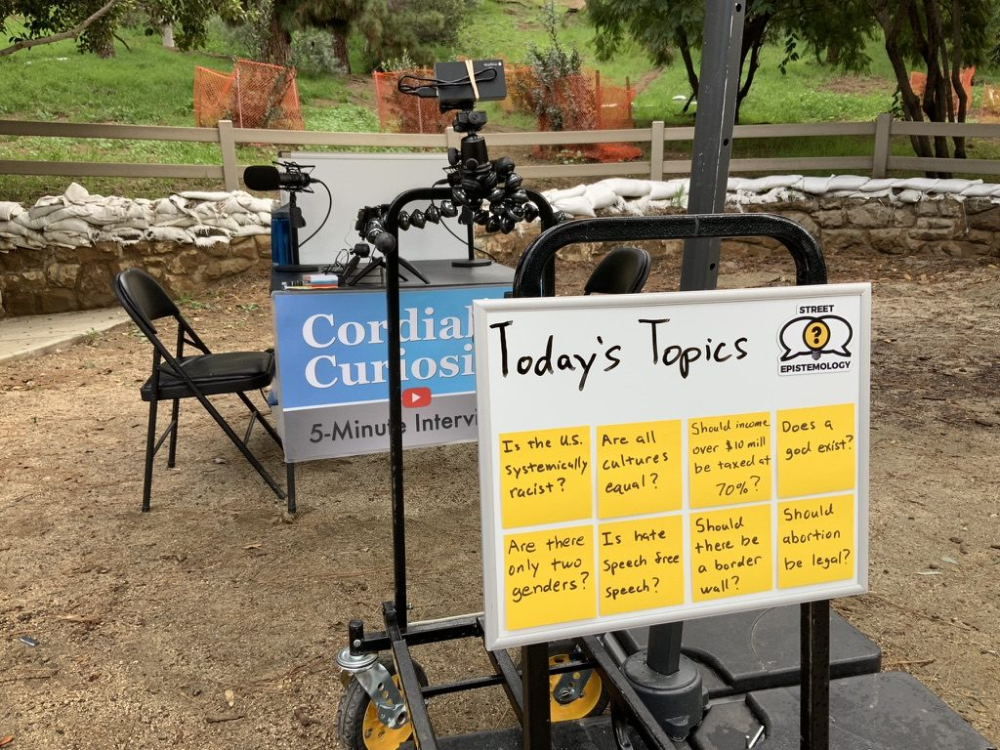
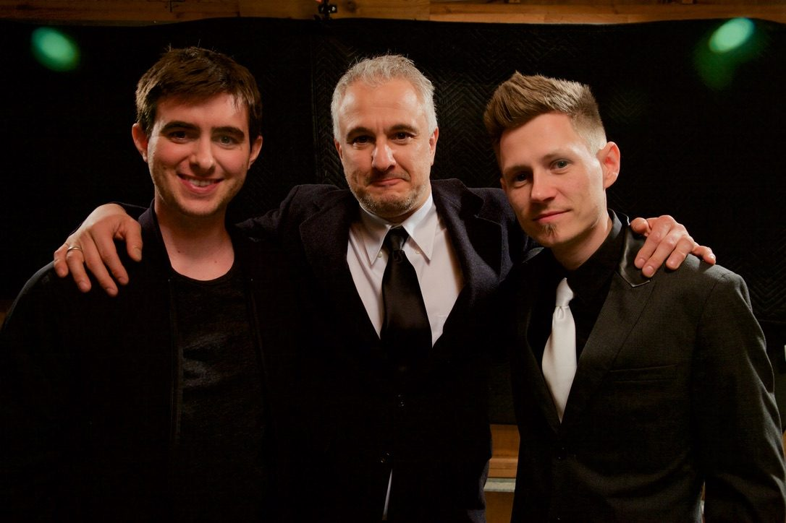
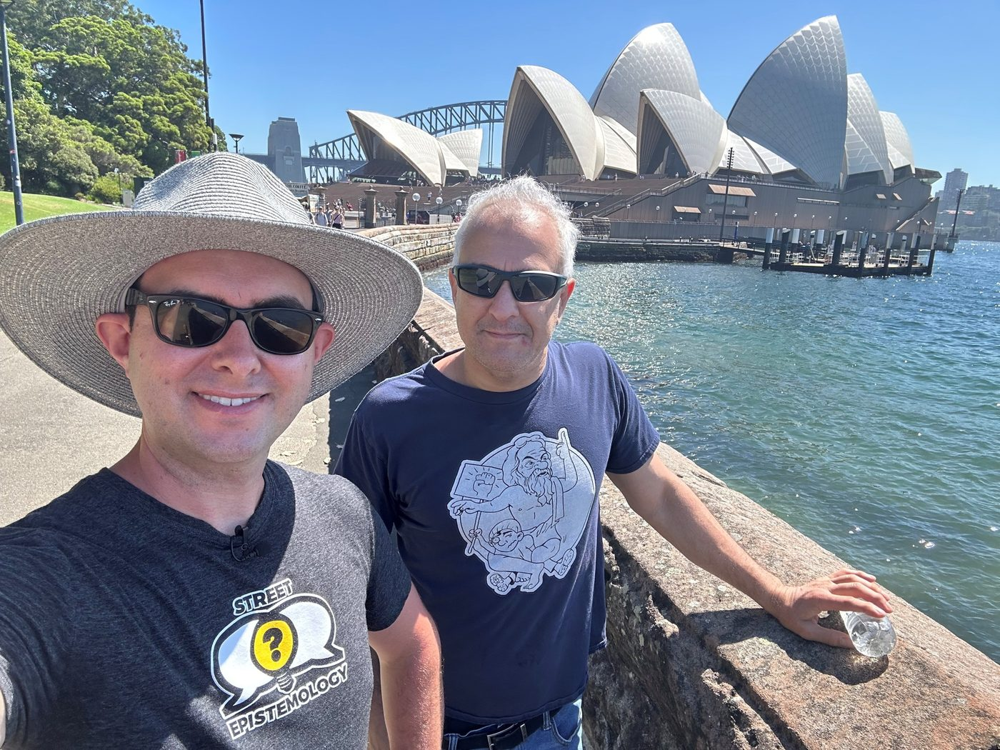
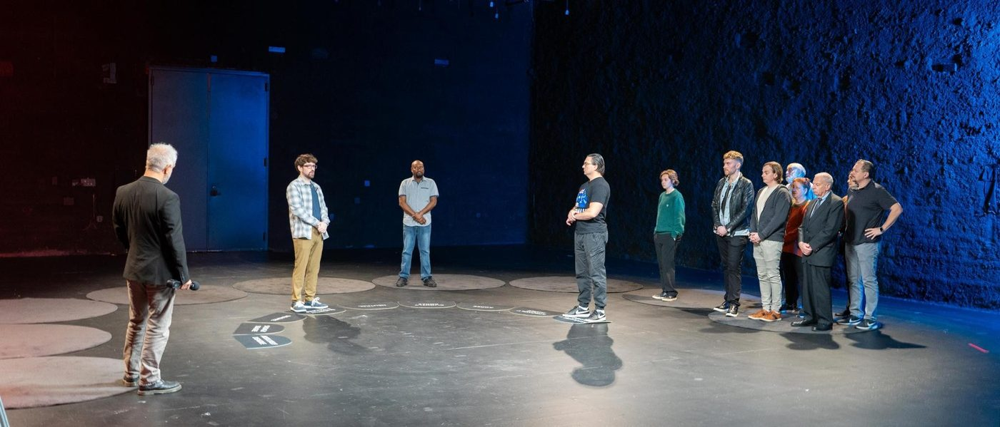
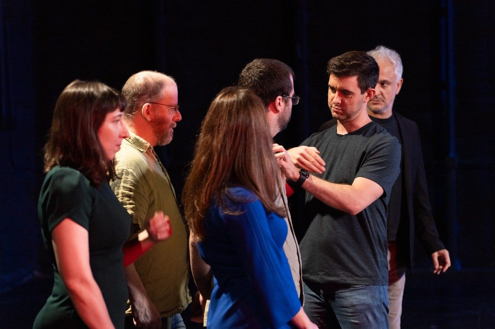

Featured talk
Trying My Best (at Street Epistemology)
Sunday Assembly Los Angeles, recorded January 2018. 6 minutes.
My talk on how I got into street epistemology.
Watch on YouTube (opens YouTube)→Street Epistemology (SE) is a way to help people critically reflect on the quality of their reasoning through civil conversation. Definition from the Navigating Beliefs course by Street Epistemology International.
I heard Peter Boghossian on a podcast and read A Manual for Creating Atheists.
I found Anthony Magnabosco's street epistemology videos and was in awe. I was also terrified to try it myself. I joined the SE Facebook group and did role-play sessions, then started having real conversations on Blab.
Blab shut down in August. A few weeks later I put a table and a sign in Griffith Park and started filming 5-Minute Interviews. I posted my failures to the SE group for feedback and watched myself back for hours. That November I started the Cordial Curiosity channel.

I went out nearly every week for a few hours, around LA.


I helped found Street Epistemology International and became its first president.

Peter Boghossian hired me to produce the videos for his Reverse Q&A tour.
I created Spectrum Street Epistemology and now direct it for Boghossian. In 2026 we ran a Spectrum SE study in New Zealand.
I've wanted to help people think more clearly, myself included, for a long time. I started on YouTube because it's the same medium that first introduced me to these values.
My mantra was to fail forward, and I failed plenty. I'd assumed people would change their minds once they saw weak reasons, and they didn't. So I started studying why people believe things, like belonging, identity, and what they need from a belief.
I moved from trying to win to trying to understand. I ask how someone came to believe something, not only what they believe. My hope is that SE makes even political conversations something people don't dread.
Featured talk
Sunday Assembly Los Angeles, recorded January 2018. 6 minutes.
My talk on how I got into street epistemology.
Watch on YouTube (opens YouTube)→





"I have been truly impressed by their capacity to take critical thinking into the public square and ask people for their explanations why they say the things they do. It is important work."
Watch
Press play and the video loads right here.
Peter Boghossian
Watch on YouTube (opens YouTube)→Cordial Curiosity
Watch on YouTube (opens YouTube)→Peter Boghossian
Watch on YouTube (opens YouTube)→Cordial Curiosity
Watch on YouTube (opens YouTube)→Listen
Conversations about Street Epistemology and Spectrum Street Epistemology. Each one opens at its source.
Cordial Curiosity on Substack, Spectrum Street Epistemology
Conversations with Peter Boghossian
The New Flesh Podcast
Deep Drinks Podcast
Chapman Bay Channel
Epistemic, on Kevin deLaplante's channel
Epistemic, Street Epistemology channel
Erik Anderson Therapy
A written interview about Street Epistemology and Cordial Curiosity.
I host Cordial Curiosity, a YouTube channel of cool-headed conversations about what we believe and why. I'm also a co-founder and board member of Street Epistemology International (SEI), the nonprofit behind streetepistemology.com, and one of the main writers of its Navigating Beliefs course.